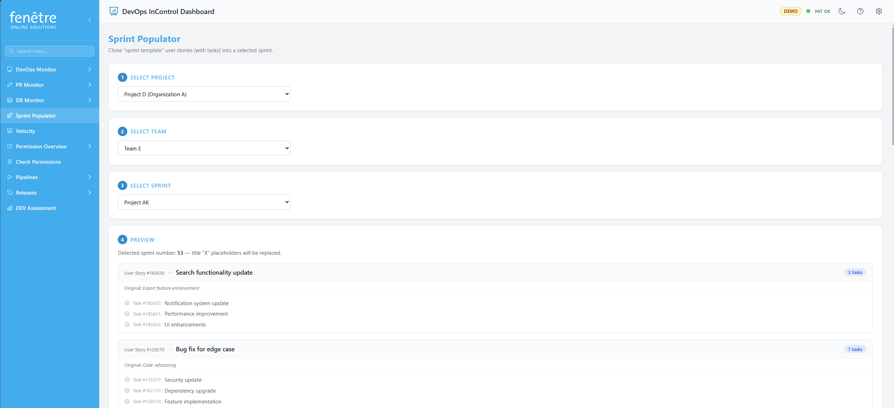

Sprint Populator
The Sprint Populator helps you set up a new sprint by automatically copying template user stories and their tasks from a previous sprint. If your team has recurring sprint tasks (like "Sprint Planning", "Retrospective", or "Deploy to Production"), you only need to create them once as templates. Templates can come from the same project as your sprint or from a different configured project.

Previewing sprint templates before cloning into a new sprint.
How Templates Work
A template is simply a User Story in Azure DevOps that has the tag sprint template. All child tasks under that story are included as part of the template.
When you use the Sprint Populator, it clones these template stories (and their tasks) into your target sprint.
You can optionally select a different source project for template lookup. This is useful when one project acts as your template library for multiple delivery projects.
Automatic Title Replacement
If a template title contains the letter X as a standalone word, it is replaced with the target sprint number. For example:
- "Sprint X Planning" becomes "Sprint 15 Planning" (if your target is Sprint 15).
- "Deploy Release X" becomes "Deploy Release 15".
How to Use It
- Open Sprint Populator from the sidebar.
- Step 1 — Select your target project (where new work items are created).
- Step 2 — Optionally select a template source project. If you do nothing, it defaults to the target project.
- Step 3 — Select your target team.
- Step 4 — Select the target sprint. The sprint dates are shown to help you pick the right one.
- Step 5 — Preview which templates will be cloned and what the new titles will look like. Check the confirmation box and click Apply.
What Gets Created
- A new User Story for each template, placed in the target sprint.
- All child Tasks from the template are cloned under the new story.
- The sprint template tag is removed from cloned items so they are not treated as templates.
Setting Up Templates
To create a sprint template in Azure DevOps:
- Create a User Story with the tasks you want to repeat every sprint.
- Add the tag sprint template to the User Story.
- That is it — the Sprint Populator will find it automatically.